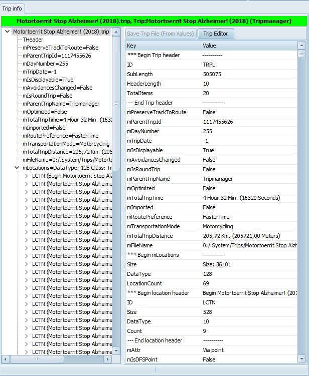

|
Trip Window (Bottom Left) |
Previous Next |
|

|
Whenever you select a trip file, from the Device file list, or
Windows file list, it is automatically loaded in the trip info.
The file name and trip name is shown in a Green bar if it was
loaded from the device, in Aqua if loaded from Windows.
If you make modifications and press Save Trip File the trip
file is saved from where it was loaded.
On the left you see a Tree view of all the data items in the
trip.
Selecting a node filters the grid.
In the grid you can modify all basic data types. The button
Save Trip File will be enabled. If you click on it you will get a
prompt ‘Saving the trip file will force recalculation. OK?’
Selecting a Node, or a line in the grid, will also update the
Hexadecimal view and the Map view on the Bottom Right.
|
|
Save trip File (From Values)
|
Save the modifications in the grid
to the trip file.
|
|
Trip Editor
|
Opens the trip in the Trip Editor.
See 12. Using Trip Editor
|